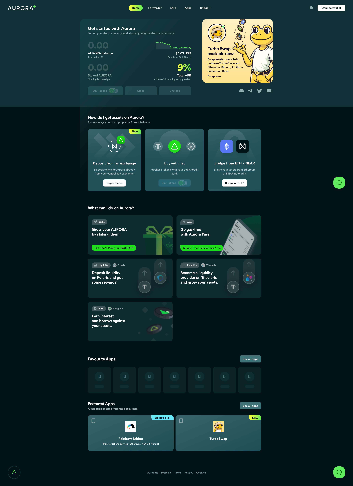

No Code Website Builder
The rapid growth of blockchain technology and cryptocurrencies has transformed the way people interact with digital assets, decentralized applications (dApps), and financial systems. However, despite its revolutionary potential, the crypto ecosystem still faces major challenges—complex user interfaces, high transaction fees, and steep learning curves for beginners. Aurora Plus emerges as a solution to these problems, offering a user-friendly gateway into the decentralized world. Built on top of the Aurora blockchain, Aurora Plus aims to simplify blockchain adoption while enhancing usability and accessibility.
To fully grasp Aurora Plus, it is essential to first understand the Aurora blockchain itself. Aurora is an Ethereum-compatible layer-2 solution built on the NEAR Protocol. It allows developers to deploy Ethereum-based applications seamlessly while benefiting from lower fees and higher scalability.
Aurora essentially acts as a bridge between Ethereum and NEAR, enabling interoperability between the two ecosystems. Developers can run Solidity smart contracts on Aurora without rewriting them, while users enjoy faster transactions and reduced costs.
This powerful infrastructure forms the backbone of Aurora Plus, which serves as a gateway for users to interact with the ecosystem more easily.
Aurora Plus (Aurora+) is a decentralized application (dApp) and membership platform designed to enhance user experience within the Aurora ecosystem. It provides a suite of features such as staking, token swaps, rewards, and access to decentralized finance (DeFi) services.
Initially launched as a membership program, Aurora Plus offered benefits like free transactions, staking rewards, and exclusive perks. Over time, it evolved into a full-fledged dApp that integrates multiple services into a single platform.
Aurora Plus is essentially a “gateway” that connects users with various dApps and services built on Aurora, making it easier for both beginners and experienced users to navigate the ecosystem.
Aurora Plus stands out due to its wide range of features designed to simplify blockchain interactions. Some of its most notable functionalities include:
1. Free Transactions
One of the most significant barriers in blockchain adoption is transaction fees. Aurora Plus addresses this issue by offering users free transactions (up to a certain limit per month).
This feature is particularly valuable for new users who are unfamiliar with gas fees, making it easier for them to explore blockchain applications without financial risk.
2. Staking Rewards
Aurora Plus allows users to stake AURORA tokens and earn rewards. Staking is a popular feature in the crypto space, enabling users to generate passive income while supporting network security.
By simplifying the staking process, Aurora Plus encourages more participation in the ecosystem.
3. Token Swapping and DeFi Integration
The platform includes built-in token swapping capabilities, allowing users to exchange cryptocurrencies directly within the app. Additionally, it provides access to DeFi services such as lending, borrowing, and yield farming.
This integration reduces the need for multiple platforms, streamlining the user experience.
4. Ecosystem Exploration
Aurora Plus acts as a hub where users can discover and interact with various dApps within the Aurora ecosystem. It provides curated access to decentralized applications, making it easier to explore new projects and opportunities.
5. Aurora Pass Wallet
With the introduction of Aurora Pass, a mobile wallet, Aurora Plus transitioned into a fully decentralized application. Users now access the platform using wallets instead of traditional login methods, aligning with Web3 principles.
6. Rewards and Incentives
Aurora Plus offers multiple reward mechanisms, including staking rewards, airdrops, and ecosystem incentives. These rewards encourage user engagement and participation.
Aurora Plus operates as a front-end interface that connects users to the Aurora blockchain. It interacts with smart contracts to enable various functionalities such as staking, swapping, and lending.
Users typically follow these steps:
Connect a crypto wallet (e.g., MetaMask or Aurora Pass).
Deposit or purchase AURORA tokens.
Use the platform’s features such as staking or swapping.
Earn rewards or explore dApps.
The platform leverages Aurora’s EVM compatibility, allowing seamless integration with Ethereum tools and services.
Aurora Plus offers several advantages that make it an attractive platform in the crypto space:
1. User-Friendly Experience
Aurora Plus simplifies complex blockchain processes, making it accessible to beginners. Features like free transactions and intuitive interfaces reduce the learning curve.
2. Low Cost and High Efficiency
By leveraging the NEAR Protocol, Aurora provides fast and low-cost transactions. This efficiency is passed on to Aurora Plus users.
3. All-in-One Platform
Aurora Plus combines multiple services—staking, DeFi, swaps, and exploration—into a single interface, eliminating the need for multiple platforms.
4. Incentivized Participation
Through rewards and incentives, users are encouraged to engage with the ecosystem, increasing overall adoption.
5. Interoperability
Aurora’s integration with Ethereum and NEAR allows seamless transfer of assets across chains, enhancing flexibility for users.
Aurora Plus represents a significant step toward mass adoption of Web3 technologies. One of the biggest challenges in blockchain is usability, and Aurora Plus addresses this by bridging the gap between Web2 simplicity and Web3 innovation.
The platform’s focus on user experience, combined with powerful blockchain infrastructure, positions it as a key player in the evolving crypto landscape.
Despite its advantages, Aurora Plus is not without challenges:
1. Competition
The crypto space is highly competitive, with many platforms offering similar features such as staking and DeFi services.
2. Adoption Barriers
While Aurora Plus simplifies blockchain usage, widespread adoption still depends on broader acceptance of cryptocurrencies.
3. Security Risks
As with any blockchain platform, security remains a concern. Smart contract vulnerabilities and hacks can pose risks to users.
4. Dependence on Aurora Ecosystem
Aurora Plus is closely tied to the success of the Aurora blockchain. Any issues within the ecosystem could impact the platform.
Aurora Plus can be used in various ways, including:
Passive income generation through staking
Trading and swapping tokens within the ecosystem
Exploring DeFi opportunities such as lending and borrowing
Participating in blockchain governance via AURORA tokens
These use cases highlight the platform’s versatility and practical value.
Community Insights and Adoption
Discussions in crypto communities highlight Aurora Plus as a beginner-friendly platform. Many users appreciate its free transactions and reward systems, which lower the entry barrier into DeFi.
For example, one Reddit discussion describes Aurora Plus as offering “up to 50 free transactions per month” along with staking and rewards, emphasizing its accessibility for new users.
Such feedback indicates that Aurora Plus is successfully addressing some of the key challenges in blockchain adoption.
Aurora Plus is a powerful and user-centric platform that enhances the usability of blockchain technology. By combining features such as free transactions, staking, DeFi integration, and ecosystem exploration, it provides a comprehensive gateway to the Aurora ecosystem.
Its evolution from a membership program to a full-fledged decentralized application reflects the growing demand for user-friendly blockchain solutions. While challenges remain, Aurora Plus has the potential to play a significant role in driving the adoption of Web3 technologies.
In a world where blockchain complexity often deters new users, Aurora Plus stands out as a solution that prioritizes accessibility, efficiency, and innovation. As the crypto space continues to evolve, platforms like Aurora Plus will be crucial in shaping the future of decentralized finance and digital ecosystems.
No Code Website Builder